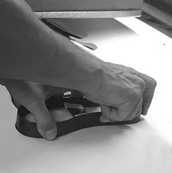
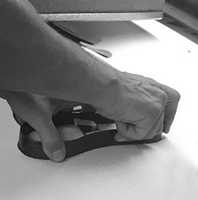

Las alpargatas Factor Tree son confeccionadas en pequeños talleres familiares en España, combinando la herencia de un método de elaboración centenario con un diseño contemporáneo. En estos talleres cuidamos cada detalle del proceso, desde la selección de los mejores materiales, la creación de los patrones y la propia elaboración del calzado.
El yute es la materia prima utilizada para elaborar la suela, materia prima 100% natural y ecológica, resistente, se adapta fácilmente al pie y permite que la piel transpire. Con esta fibra se confecciona la trenza, la cual es enrollada hasta darle la forma de la suela, a este proceso se le llama “urdido” y se sigue realizando como en tiempos pasados, manualmente, una a una. A continuación se protege la suela aplicando una lámina de caucho natural, este paso se realiza mediante vulcanizado, sin utilizar pegamento.
La fase de unión de la tela a la suela se denomina “remonte” y se sigue realizando totalmente a mano, puntada a puntada, es junto con el urdido las fases del proceso que menos han evolucionado, Se utiliza una aguja mayor que las ordinarias y en la palma de la mano se coloca una pieza metálica para evitar cortes o grietas.
Desde Factor Tree estamos muy orgullosos de ofrecer unas alpargatas únicas y auténticas, elaborada siguiendo un proceso de elaboración honesto y sostenible, fiel a una tradición que se ha mantenido prácticamente intacta a lo largo de los siglos.